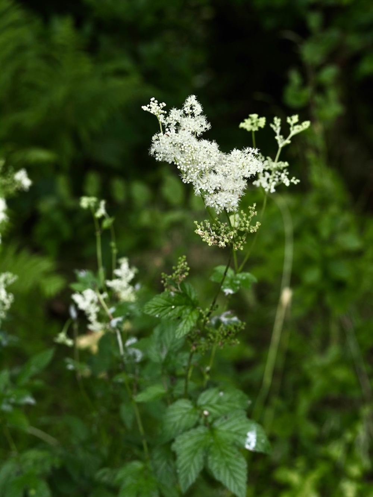
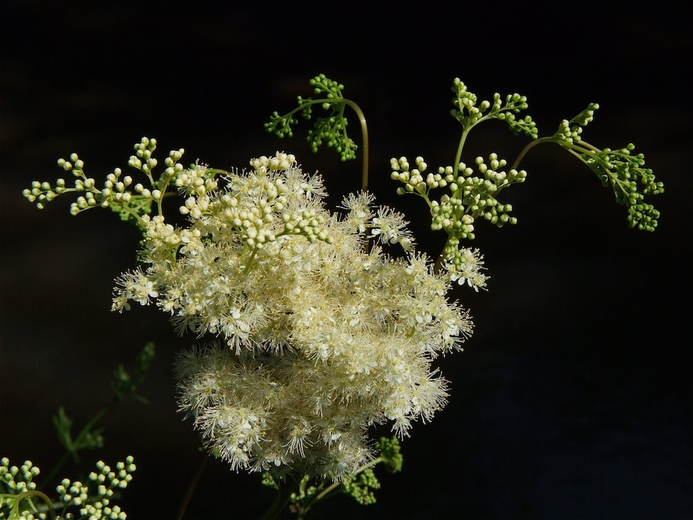

Aspirin aus dem Wiesenbach
Hier eine Pflanze, der wir wirklich was schulden: Aus den Blüten und Blättern des Mädesüß wurde 1839 zum ersten Mal Salicylsäure isoliert — der direkte Vorläufer von Aspirin. Der Name „Aspirin“ selbst kommt vom alten Gattungsnamen „Spiraea“ (also „a-Spirin“). Bayer hat das Medikament 1899 auf den Markt gebracht — und der Stamm der Pflanze, die das alles möglich gemacht hat, blüht bis heute am Bachufer.
Met und Honigwein
Der deutsche Name „Mädesüß“ kommt von „Met-süß“: Schon die Germanen würzten ihren Met (Honigwein) mit den honigsüß duftenden Blüten. Auch im Mittelalter war es das beliebteste Streukraut — die getrockneten Blätter wurden auf Fußböden gestreut, um Räume zu duften (eine Art frühes Raumspray). Wer die Blüten zerreibt, riecht es: Mandel, Honig, Vanille.